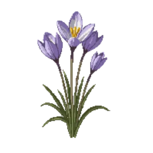

Crocus
Crocus tommasinianus

Crocus is a bulb for bulb layer, suited to full sun to partial shade and loam, sandy soil or chalk, flowering Feb, Mar.
| Type | Bulb |
|---|---|
| Mature height | 8 cm |
| Spread | 8 cm |
| Aspect | full sun to partial shade |
| Foliage | Deciduous |
| Hardiness | USDA 3a-8b, RHS H6 |
| Pollinator-friendly | Yes |
| Pet-safe | No |
Where to use it in a border
At around 8 cm, it sits best along the front edge, where a low, spreading habit reads best. Give it about 8 cm of room to spread, roughly 12 to the metre when planted in a drift. It is hardy across USDA zones 3a to 8b and rated H6 by the RHS, so check it suits your area before planting.
It appears in our lists of full sun, shade, sandy soil, chalk soil, pollinator-friendly plants.
Flowering through the year
Worth knowing
- It tolerates a shaded, north-facing spot.
- Not recorded as pet-safe; site it away from pets that graze if that matters to you.
- Its flowers are valued by bees and other pollinators.
Good companions
Plants that share its conditions and style, chosen to complement its place in the border:
- Candelabra primulato edge in front
- Candelabra primula 'Miller's Crimson'to edge in front
- Carolina Lilyfor height behind it
- Common Honeysucklefor height behind it
- Common Yellow Azaleafor height behind it
- Drummond's Onionto edge in front
Garden styles
Cottage garden Wildlife garden Woodland
See Crocus set in a full border, with spacing and companions worked out for your own conditions, in Border Builder.
Sources
Bloom timing and hardiness drawn from:
- MoBot Plant Finder (missouribotanicalgarden.org, 2026-05)
- UMN Extension (extension.umn.edu, 2026-05)
- NC State Extension (plants.ces.ncsu.edu, 2026-05)
- RHS (rhs.org.uk, 2026-05)